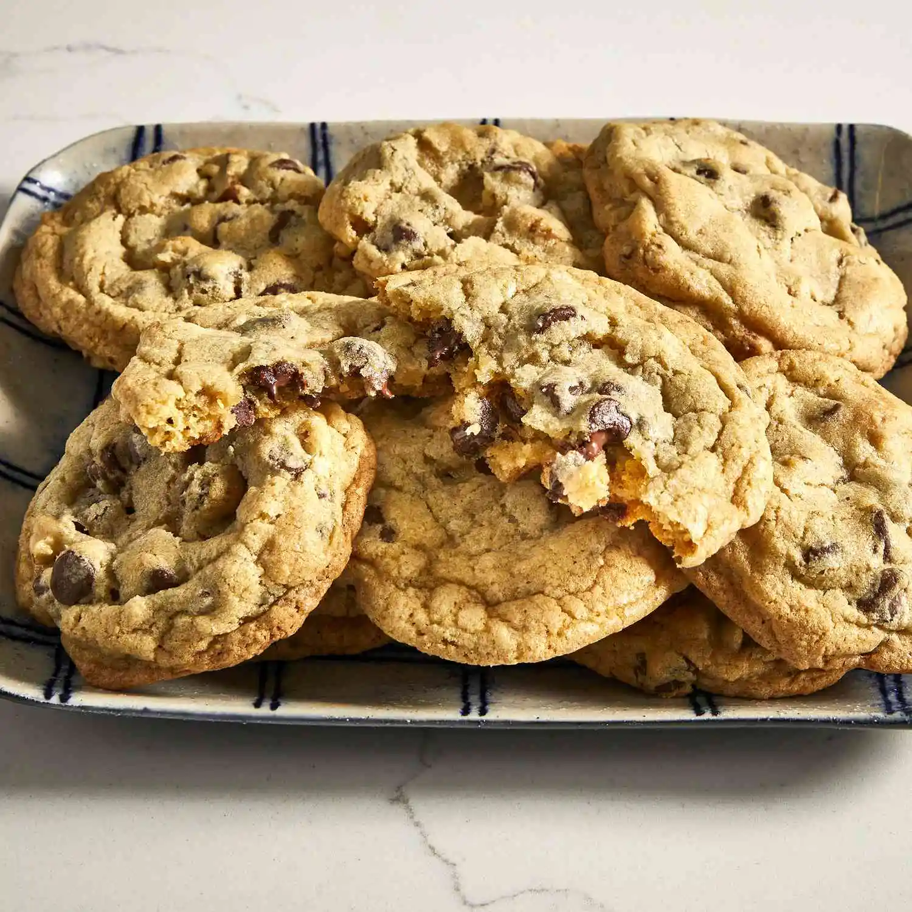

Recipe for Chocolate Chip Cookies

Description
This top-rated recipe produces classic chocolate chip cookies with perfectly crisp edges and soft, chewy middles. A unique step in this recipe involves dissolving the baking soda in hot water before adding it to the batter, which contributes to its signature texture.
Ingredients
- 1 cup butter, softened
- 1 cup white sugar
- 1 cup packed brown sugar
- 2 eggs
- 2 teaspoons vanilla extract
- 1 teaspoon baking soda
- 2 teaspoons hot water
- 1/2 teaspoon salt
- 3 cups all-purpose flour
- 2 cups semisweet chocolate chips
- 1 cup chopped walnuts (optional)
Steps
- Preheat & Prep: Preheat your oven to 350°F (175°C).
- Cream Butter & Sugars: In a large bowl, cream together the softened butter, white sugar, and brown sugar until the mixture is smooth.
- Add Wet Ingredients: Beat in the eggs one at a time, then stir in the vanilla extract.
- Dissolve Baking Soda: Dissolve the baking soda in the hot water. Add this mixture to the batter along with the salt.
- Mix in Dry Ingredients: Stir in the flour, chocolate chips, and walnuts (if using) until just combined.
- Scoop & Place: Drop large spoonfuls of dough (about 2 inches apart) onto ungreased baking sheets.
- Bake: Bake for about 10 minutes in the preheated oven, or until the edges are nicely browned.
- Cool: Let the cookies cool on the baking sheets for a few minutes before transferring them to a wire rack to cool completely.
Home